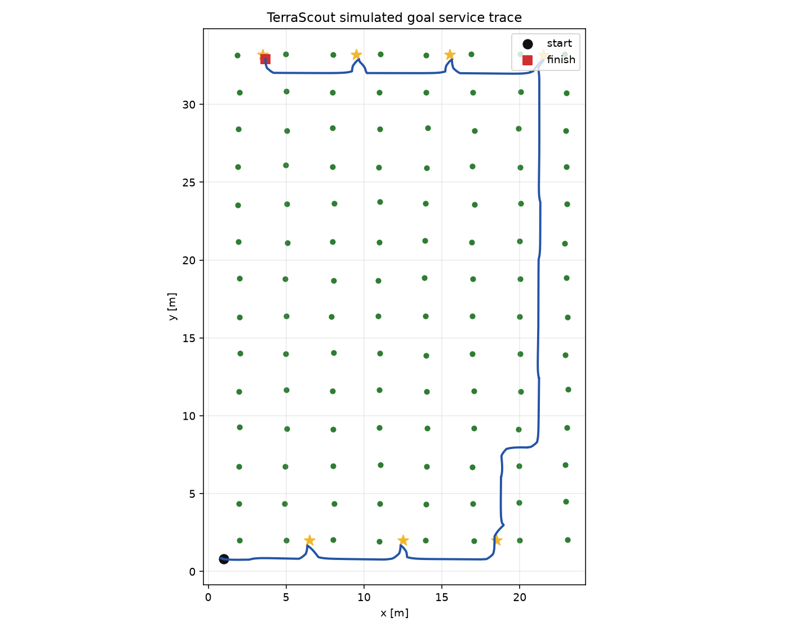

TerraScout
An orchard autonomy simulation that connects particle localization, worker tracking, mapping, planning, and rover control. Every executed tick is checked independently for contact with trees, workers, and boundaries.
From observations to executed motion.
One local observation frame supplies localization, tracking, and mapping. The selected pose estimate drives the rover. Simulated encoders and IMU yaw rate provide motion estimates.
Results with a defined protocol.
The README reports the archived reference run and explains every denominator. Fresh CI runs retain CSVs, traces, environment versions, and source provenance. Incomplete missions and collisions remain visible in the results.
Read measured results ↗ · Review the audit repairs ↗

Engineering scope and remaining work.
This is a software portfolio project with synthetic measurements and a known tree map. Raw lidar scans and a RANSAC trunk detector are separately tested components. The mission currently uses labeled centroids with ideal object classes and no occlusion model.
Physical sensor calibration, actuator integration, crop sensing, field accuracy, and certified human safety have not been validated. A stopped rover can still be struck by an independent worker. Such contact is recorded as a failed mission.
Next steps are raw scan perception, detection failure experiments, worker encounter recovery, and calibrated hardware validation.
Reproduce the experiment.
python -m pip install -e ".[dev]" -c constraints-ci.txt
terrascout-reproduce --skip-gif
python -m pytest
python -m pytest -m performance --no-covCI validates Python 3.11 and 3.12 and exercises a wheel installed outside the source checkout.